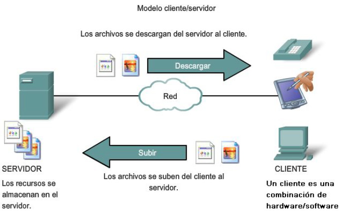
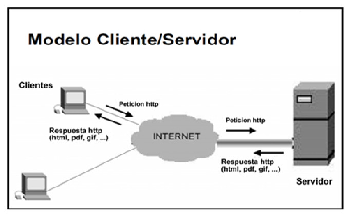
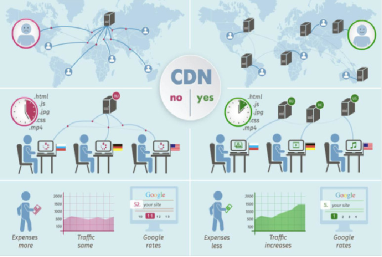
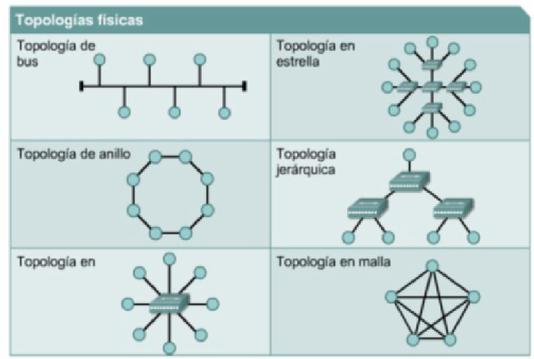
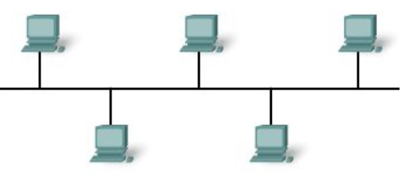
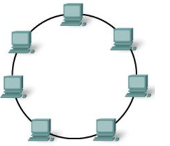

Una red de área local o LAN (por las siglas en inglés de Local Area Network) es una red de computadoras que abarca un área reducida a una casa, un departamento o un edificio. Una red individual generalmente cubre una única área geográfica y proporciona servicios y aplicaciones a personas dentro de una estructura organizacional común, como una empresa, un campus o una región. Una LAN por lo general está administrada por una organización única. El control administrativo que rige las políticas de seguridad y control de acceso está implementado en el nivel de red.
Red de Área amplia (WAN)
Una red de área amplia, o WAN (Wide Area Network en inglés), es una red de computadoras que une varias redes locales, aunque sus miembros no estén todos en una misma ubicación física. Muchas WAN son construidas por organizaciones o empresas para su uso privado, otras son instaladas por los proveedores de internet (ISP) para proveer conexión a sus clientes. Las WAN utilizan dispositivos de red diseñados específicamente para realizar las interconexiones entre las LAN. Las redes LAN separadas por una distancia geográfica están conectadas por una red WAN.
Por distribución de funciones
Cliente-Servidor
En este tipo de red, la administración y los recursos se centralizan en una computadora denominada servidor (server). Básicamente, este servidor brinda servicios y cuenta con un sistema operativo especial, más potente que el de las computadoras de los usuarios llamadas clientes o también denominadas estaciones de trabajo (workstations).



Redes de pares
A diferencia de las redes basadas en servidor, en este tipo de red todas las computadoras tienen el mismo nivel. Esto significa que cada una de las estaciones funciona como Workstation y como servidor.
Por topología
La topología de red se define como el mapa de una red para intercambiar datos. Es la forma en que está diseñada la red sea en el plano físico o lógico.
Topología física
Es la disposición real de medios, así también la configuración de nodos y las conexiones físicas entre ellos. La representación de cómo se usan los medios para interconectar los dispositivos es la topología física. Algunas topologías físicas son:
Bus
Anillo
Estrella
Malla



Topología lógica
Es la forma en que una red transfiere tramas de un nodo al siguiente. Esta configuración consiste en conexiones virtuales entre los nodos de una red independiente de su distribución física. Los dos tipos más comunes de topologías lógicas son broadcast y transmisión de tokens.